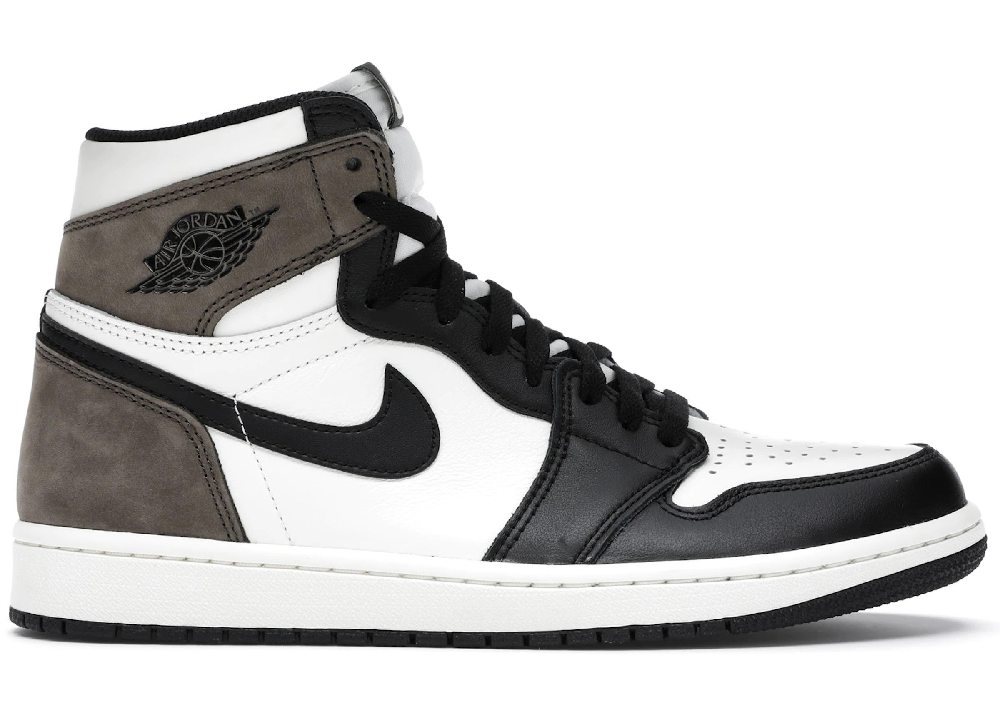

KEDAS


Jordan 1 Retro High Dior
Cena: 15$
Produkta apraksts Jordan Brand sadarbojās ar Parīzes modes namu Dior, lai izveidotu vēsturi ar Jordan 1 Retro High Dior, kas tagad ir pieejams StockX.
Šī ir pirmā reize, kad Džordans sadarbojas ar tādu mantoto modes zīmolu kā Dior, padarot šo izdevumu par vienu grāmatu. Šis laidiens bija ierobežots līdz 8500 pāriem, katrs atsevišķi numurēts. Šis Jordan 1 Retro High sastāv no baltas un pelēkas ādas virsas ar tradicionālo Dior monogrammas apdruku Swoosh.
Šie apavi ir ražoti Itālijā no augstākās kvalitātes materiāliem. Kopzīmola ledainas caurspīdīgas zoles, Dior zīmola mēle un Wings logotips, kā arī sudraba "Air Dior" pakarināmā birka papildina dizainu. Šīs kedas tika izlaistas 2020. gada aprīlī un tika pārdotas par 2000 $.